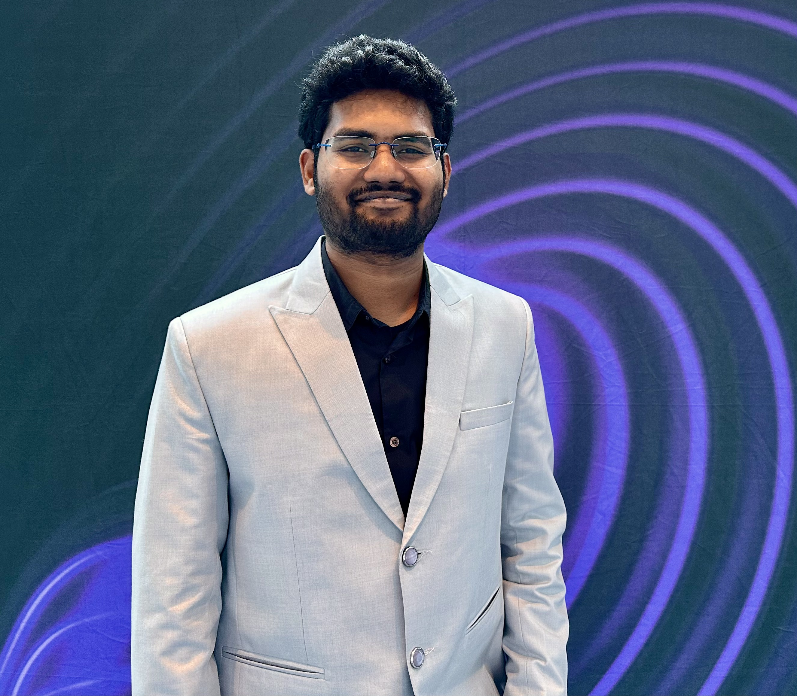

PhD Researcher, Biophotonics@Tyndall, Tyndall National Institute
Suraj Kumar Kothuri
Optics · Photonics · Photonic integration · Wearables · Biophotonics
Developing wearable optical systems for tissue measurement, from optical design and miniaturisation to in vivo validation.

Profile
PhD researcher in biophotonics at Tyndall National Institute, graduating in time-domain diffuse optics (2027). My work spans the development of wearable systems for tissue measurement: optical design and alignment, miniaturisation and prototyping, photonics packaging, validation on tissue phantoms and in vivo, and data analysis.
I have contributed to a wearable tissue oximetry system based on low-cost LiDAR components, a 4 mm multimodal endoscopic probe and the first broadband optical characterisation of human bone. These works are available as published journal papers (3) and conference proceedings (9). I am now seeking photonics engineer (or relevant) positions.
Education
Physics, photonics, then biophotonics
Expertise
Technical skills
Research
Research highlights
PhD Researcher, Biophotonics@Tyndall, Tyndall National Institute · Cork, Ireland · February 2023 – present
Wearable time-domain tissue oximetry
- Developing a wearable-footprint time-domain NIRS system for tissue oxygenation monitoring, based on low-cost LiDAR time-of-flight components, advancing on current portable state-of-the-art time-domain systems.
- Applied diffuse optics and photon migration theory to extract tissue biomarkers from low-resolution, low-count time-of-flight data.
- Characterised in vivo performance by measuring arm-muscle oxygenation changes during and after cuff occlusion.
- Presented the approach as first author at Biomedical Congress 2026; journal manuscript in preparation.
- Conducted an exploratory study of time-domain pulse oximetry, presented as first author at the European Conference on Biomedical Optics (2025).
Multimodal endoscopic probe
- Integrated the time-of-flight channel into a 4.0 mm side-viewing endoscopic probe alongside a chip-on-tip micro-camera.
- Benchmarked the probe on MEDPHOT phantoms for stability, repeatability and robustness, and performed phantom and in vivo time-of-flight measurements.
- Developed the analysis pipeline to retrieve tissue absorption and scattering coefficients from time-of-flight data.
- Coordinated phantom design with industry manufacturing partner BioPixS.
- Published as equal first author in Journal of Physics: Photonics (2026).
Human bone optical characterisation
- Led the first broadband (500–1100 nm) time-domain diffuse optical characterisation of fresh human cadaver bone.
- Published as first author in Scientific Reports (2025) and released the data as an open dataset.
- Co-authored a Raman framework for in vivo bone assessment in Journal of Physics: Photonics (2026).
Publications & peer-reviewed conferences
Three journal papers, nine peer-reviewed conference papers
Journal publications
*Equal first author contribution.
Conference papers: first author, presenter
Conference papers: second author, presenter
Conference papers: co-author
Courses & training
Professional development
Technical
Innovation
Schools & industry visits
Leadership
Leadership & mentoring
Memberships
Working with people
[Heading]
Collaboration
[Concrete example]
Mentoring & teaching
[Concrete example]
Communication
[Concrete example]
Testimonials
In their words
I have worked closely with Suraj for almost three years. He is diligent and thoughtful, with the determination to follow through on whatever he sets his mind to. He would be a valuable addition to any team.
Outside work
Get in touch.
Seeking photonics engineer (or related) positions in industry.